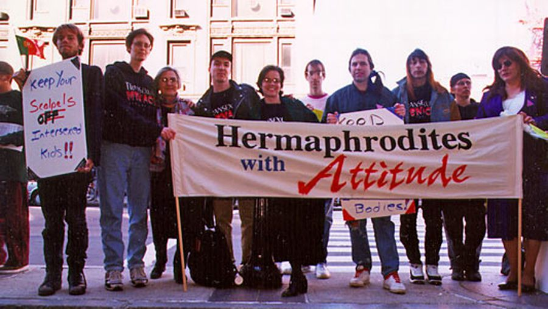

Aprenda mais sobre a comunidade
- ONU Brasil - Ativistas explicam o que significa ser intersexo
- Buzz Feed Brasil - Como é ser uma pessoa intersexual?
- O que é a letra I na sigla LGBTQIAP+
26 de outubro de 1996: O dia em que o movimento intersexo ocupou as ruas e fez história
A primeira manifestação pública de pessoas intersexo desafiou a medicina e deu origem ao Dia Mundial da Consciência sobre o tema.

No dia 26 de outubro de 1996, um pequeno grupo de ativistas em Boston, nos Estados Unidos, mudou os rumos dos direitos humanos. Munidos de cartazes em frente à conferência anual da Academia Americana de Pediatria, eles realizaram a primeira manifestação pública de pessoas intersexo de que se tem registro no mundo. O protesto foi uma reação direta contra as cirurgias e tratamentos médicos invasivos realizados em bebês e crianças intersexo sem o consentimento delas — uma prática padrão na época para "normalizar" corpos que nasciam com características biológicas fora do binarismo tradicional de macho e fêmea.